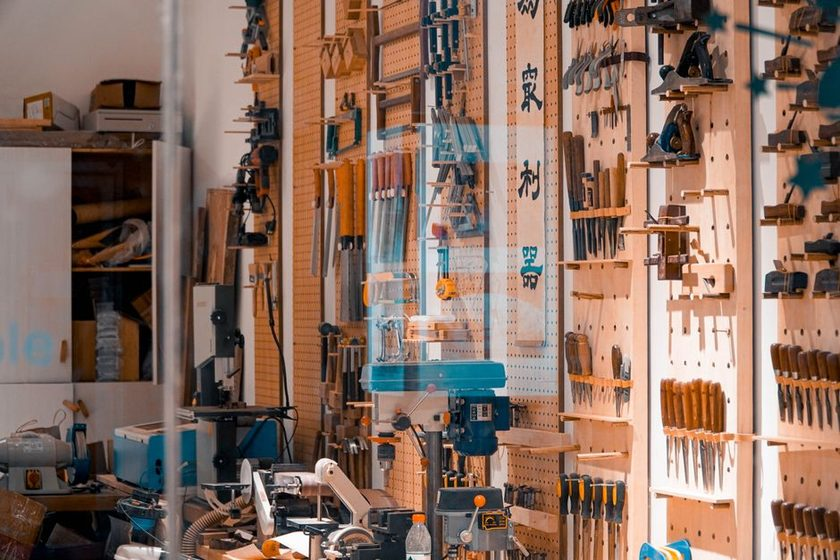

The Pegboard Nobody Redesigns
A pegboard usually goes up on the first weekend. The bench is bare, half the boxes are still taped shut, and whoever is holding the drill has a clear mental picture of a shop that does not exist yet. Holes get marked. Hooks go in at a comfortable height. Then the work changes twice over, three tools leave and five arrive, and the board stays exactly as it was — the oldest decision in the room, made by the person who knew the least about the room.

Designed on day one, by a stranger
That stranger is you, minus every hour you have logged since. On installation day the layout is a guess wearing the clothes of a plan. Sockets go left because sockets went left in the shop where you learned. A long clear stretch is reserved for clamps you intend to buy. The drill sits dead centre because it felt important, and on that day it was.
None of this is unreasonable. It is simply written before the evidence arrives, and the evidence arrives slowly. A run of work shows up that needs three hex sizes forty times a week. A tool you were certain about goes untouched for eighteen months. Someone borrows the second hammer and it never comes home. In our own six square metres, the layout that lasted longest was never the best one — it was the one nobody wanted to spend an afternoon undoing.
The tells of a stale board
A stale board does not look broken. It looks lived in, which is exactly why it passes inspection every time you glance at it. You have to look for specific things instead.
- An outline with nothing in it, every day, for months. That is not a gap — a gap gets filled at five o'clock. That is a vacancy, and it is the loudest signal a wall can send. We wrote about the difference in The Shape That Tells on You.
- A tool hanging on a bare hook with no painted shape beneath it, because it arrived after the paint dried and nobody wanted to open the tin again.
- One crowded corner where three hooks do the work of eight, and everything hangs at a slight angle to clear its neighbour.
- Half a board that is simply empty, holding the ghost of a category of work you stopped doing years ago.
- A hook you reach past. Every shop has one. The tool on it is fine; the position is wrong for the hand that uses it.
| What you see | What it usually means | Smallest useful move |
|---|---|---|
| Outline empty for months | The tool left the shop, or lives somewhere else now | Retire the outline; leave the hook for reassignment |
| Tool with no outline | It arrived after the board was painted | Trace it where it currently hangs before deciding it belongs there |
| Crowded corner, angled tools | The board grew around one heavy-use zone | Move one item out per visit, not eight at once |
| Empty half | A whole kind of work ended | Leave it empty one more season, then reclaim it deliberately |
| A hook you reach past | Position, not tool, is the problem | Swap it with a neighbour and watch for a week |
A board goes stale on the day it stops being the fastest way to answer "where is it" — and nobody announces that day.
Why moving one hook feels like a project
Mostly it is framing. "Redesign the pegboard" is a Saturday. "Move one hook" is ninety seconds. The mind quietly files the second under the first, and then nothing happens, because Saturdays are expensive and ninety seconds are not.
Paint does the rest. Once shapes are on the wall, moving a tool means either living with a wrong silhouette or repainting, and repainting means matching the colour, and matching means a trip to buy more. The very thing that made the board honest also made it heavy. That tradeoff is worth understanding before you commit to it — we laid out both sides in Painted Outlines Versus Labels.
There is a third reason, less flattering. A board you built yourself feels like a judgement you already made. Rearranging it reads, faintly, as admitting the first pass was wrong. It was not wrong. It was early.
A review, not a redesign
The alternative to a redesign is a walk. Once a year — pick a date you will remember, the week the clocks change works well — stand in front of the board with a pencil and nothing else. No tools come down. Nothing gets moved that day.
- Mark every outline that has been empty since the last review. Not empty today; empty as a habit.
- Mark every tool hanging without a shape under it.
- Count the tools in the busiest quarter of the board and the tools in the quietest quarter. Write the two numbers on the pencil list.
- Note the one hook you reach past. Just one, even if there are three.
- Put the list in a drawer for a week. Then act on the two smallest items and ignore the rest.
Two changes a year is a slow rate, and it is enough. It also keeps the wall recognisable, which matters more than optimal placement — a board that changes shape every month is as unreadable as one that never changes at all. Frequency is the honest sorting key here, the same principle we apply to restocking rather than filing things alphabetically.
The wall stops being read once it stops being trusted
This is the part that matters more than layout. A pegboard works because it is a record: the shape says the tool belongs here, so the eye can check a whole wall in one pass. That only holds while the record is accurate. Let two or three outlines go wrong — one for a tool that left, one for a tool that moved — and the surface loses its authority. Not partly. Entirely.
After that, people stop consulting the board and start searching. They open drawers. They ask. The wall becomes decoration with holes in it, and the honest bookkeeping it used to do quietly disappears, which is precisely the failure mode a drawer has by design and a wall was supposed to avoid. Once searching becomes the default behaviour in a shop, no amount of repainting brings the trust back on its own — the outlines have to be right for a while before anyone believes them again.
So the argument for the annual walk is not tidiness. It is credibility maintenance. A board that is 90 percent accurate is not 90 percent useful; it tends to be closer to zero, because nobody can tell which tenth is lying.
Editorial note
This is a description of how fixed-position storage behaves in small shops, drawn from our own bench and from readers who write in. Shops differ, and so do the tools and the hands using them. Treat any interval here — annual, weekly, one season — as a starting point to adjust, not a rule to follow.